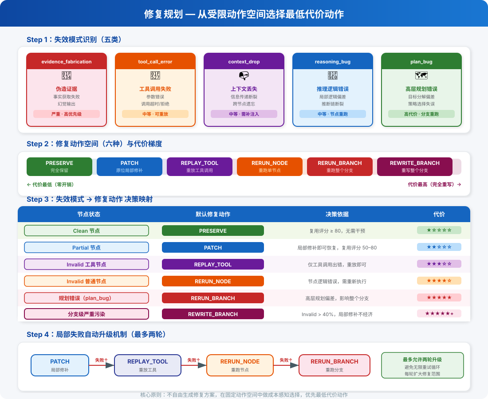
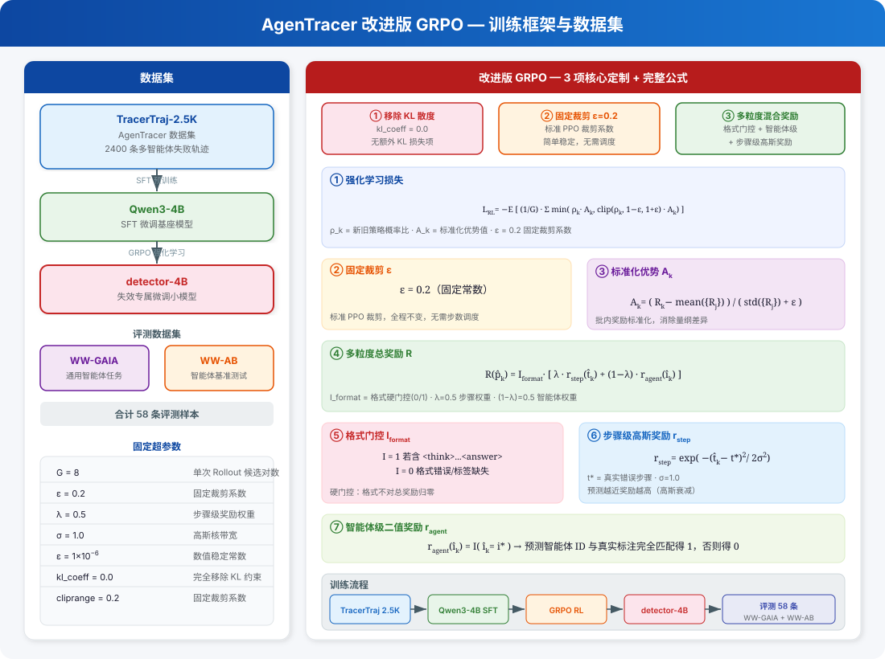
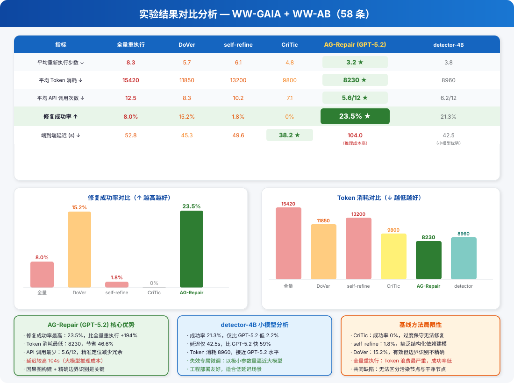

1问题定义与动机
为什么不能全量重跑？
传统方法：失败点之后全量重跑，浪费大量计算
AG-Repair：只修复根因 + 被污染节点，保留干净节点
目标：正确性 · 最小干预 · 最大复用 · 一致性

2 / 7
核心思想：不丢弃整条失败轨迹，而是定位最小修复范围，增量恢复





把错误传播范围从经验判断变成图上的量化问题 — MAICG 污染传播模型 + 复用评分，精确区分 Clean / Partial / Invalid
把开放式"怎么修"变成受限动作空间中的成本感知决策 — 六种动作按代价梯度排列，层层升级，可解释可审计
把"从错误点之后全部重来"变成"从最近安全状态出发，仅重放必要子图" — 依赖 checkpoint + journal replay + Active Dependency Frontier
AG-Repair 不只是 failure attribution 框架
而是一套真正面向 failure recovery 的完整方法论